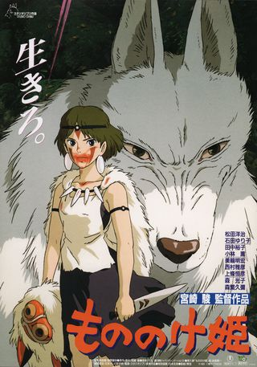
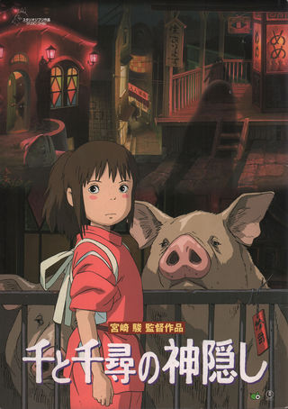
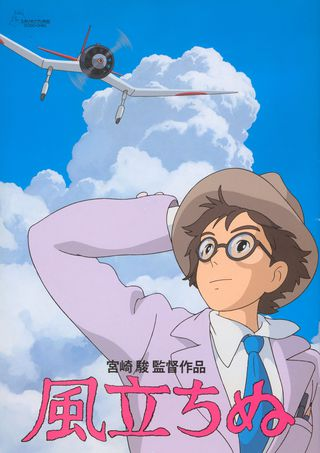
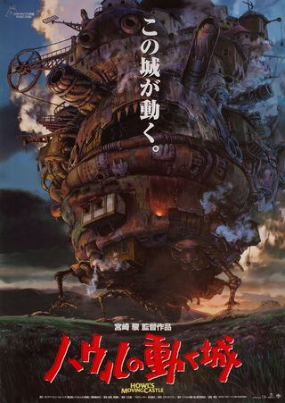
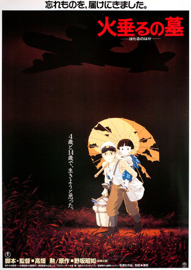

-

1. Princess Mononoke
A young warrior gets cursed and travels to a distant forest where he gets caught in a massive war between industrial humans and the ancient gods of nature. He meets a fierce human girl raised by wolves and tries to help both sides finally find peace.
My Review: Princess Mononoke is easily my number one Miyazaki film. What really hooks me is how morally grey the whole thing is since there isn't really a traditional villain to root against. It just paints this incredible picture of how humanity and nature need to figure out how to coexist. The visuals are absolutely breathtaking, and the score just elevates the whole experience. Even though it is a bit lengthy, I constantly go back to rewatch it because it is just that much of a masterpiece.
Director: Hayao Miyazaki
-

2. Spirited Away
A young girl accidentally wanders into a magical world ruled by spirits and gods after her parents are suddenly turned into pigs. She has to work at a bizarre bathhouse and find her inner courage to save her family and return home.
My Review: Spirited Away just completely pulls you into another universe from the very first scene. I love how unpredictable the bathhouse is with all the bizarre spirits and strange rules. Watching Chihiro go from a scared kid to someone who completely owns her power is so satisfying. The art style is absolutely stunning on every level, and the music hits right in the feels every single time. It is a crazy adventure that just feels like a warm hug. It is a total classic that I can put on anytime and never get bored of it.
Director: Hayao Miyazaki
-

3. The Wind Rises
This is a historical drama about a young man named Jiro who dreams of designing beautiful airplanes despite the looming threat of global conflict. It follows his life, his romance, and the bittersweet reality of seeing his brilliant creations used for destruction.
My Review: The Wind Rises is such a beautiful and bittersweet movie. The core message about pouring your soul into creating something beautiful really spoke to me. Seeing Jiro obsess over his designs and dedicate his entire life to his craft is honestly so inspiring. I spend so much of my own time drawing, whether that is sketching or another medium, so his drive to just keep creating despite all the obstacles completely hit home. It is just a gorgeous reminder to follow your passion and make the most out of the time you have. One of the absolute coolest details is the sound design. They actually used human voices for the airplane engines and the wind, which gives the machines this weirdly realistic and breathing quality.
Director: Hayao Miyazaki, Gary Rydstrom
-

4. Howl's Moving Castle
After being cursed by a witch to look like an old woman, a quiet hat maker named Sophie seeks refuge in the magical walking castle of a dramatic wizard named Howl. Together with a fire demon and a young apprentice, they form an unlikely family while trying to survive a massive war.
My Review: Howl's Moving Castle is an absolute comfort movie for me. Sophie is such a great character because she completely grounds the story, especially when dealing with Howl being incredibly dramatic all the time. The whole dynamic with Calcifer and the rest of their found family is just heartwarming and so much fun. The way the castle is just this giant chaotic machine clanking around the countryside is so cool to watch. The magic feels so alive in every single frame. It is a perfect mix of romance and fantasy that always leaves me smiling by the very end.
Director: Hayao Miyazaki
-

5. Grave of the Fireflies
Two young siblings struggle desperately to survive in Japan during the final months of World War Two after losing their mother to a bombing. It is a deeply moving story about their unbreakable bond and the incredibly tragic human cost of war.
My Review: Grave of the Fireflies is easily the most devastating Studio Ghibli movie I have ever seen. The bond between Seita and his little sister Setsuko is so genuine that watching them try to survive on their own completely breaks your heart. The story does not shy away from the brutal reality of war, but the quiet moments they share with the fireflies are incredibly beautiful. It is an absolute masterpiece of emotional storytelling. I might not put it on constantly because of how heavy the subject matter is, but it is one of those films that stays with you forever once you see it.
Director: Isao Takahata